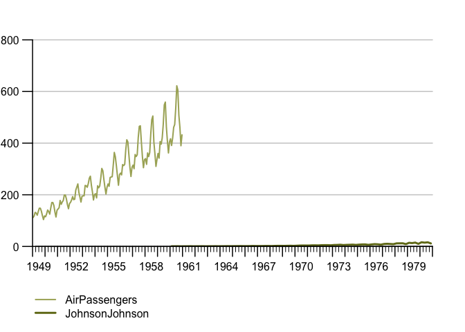
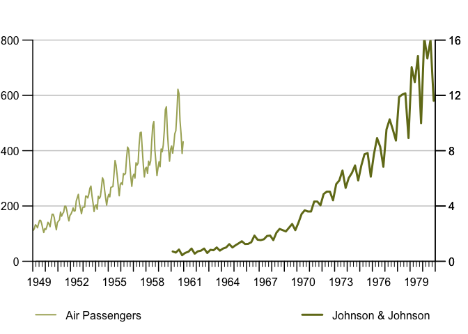

Plot official statistics’ time series conveniently: automatic legends, highlight windows, stacked bar chars with positive and negative contributions, sum-as-line option, two y-axes with automatic horizontal grids that fit both axes and other popular chart types. ‘tstools’ comes with a plethora of defaults to let you plot without setting an abundance of parameters first, but gives you the flexibility to tweak the defaults. In addition to charts, ‘tstools’ provides a super fast, ‘data.table’ backed time series I/O that allows the user to export / import long format, wide format and transposed wide format data to various file types.
-> pkgdown documentation <-
Installation
You can install the development version of tstools from GitHub with:
# install.packages("remotes")
remotes::install_github("kof-ch/tstools")Example Use: Time Series Charts with Legends by Default
{tstools} lets you draw time series line charts that come with a legend out-of-the-box. Simply feed the tsplot() function with a list of time series.
library(tstools)
## basic example code
tsl <- list(
AirPassengers = AirPassengers,
JohnsonJohnson = JohnsonJohnson
)
tsplot(tsl)
and use easily use 2 y-axis. (I know some argue those double axes are fundamentally flawed, but my peers didn’t care and asked for it.)
tsplot(
"Air Passengers" = tsl$AirPassengers,
tsr = list("Johnson & Johnson" = tsl$JohnsonJohnson)
)